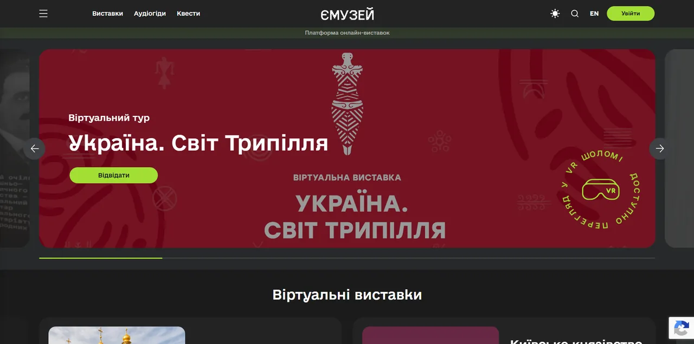
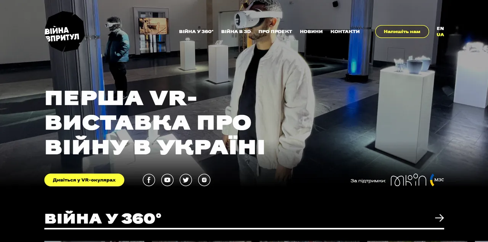
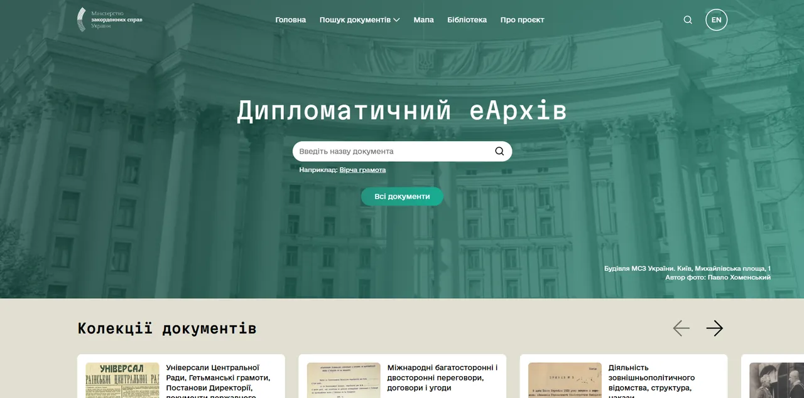
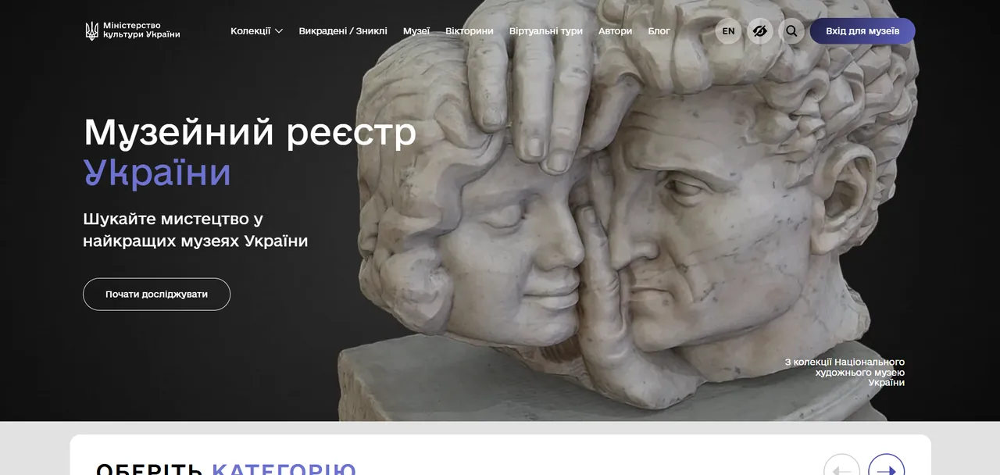
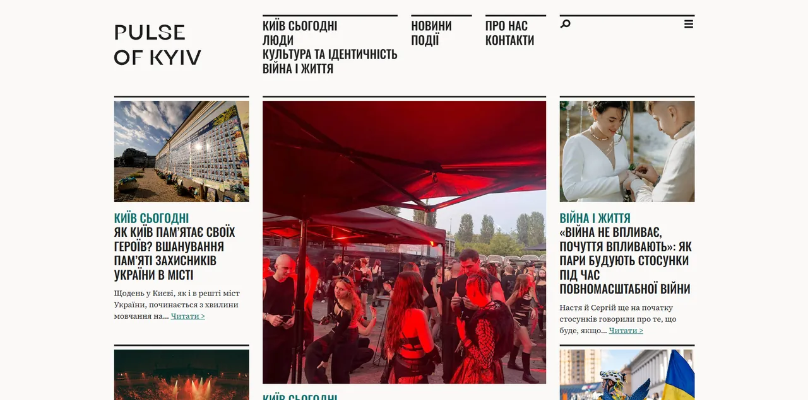
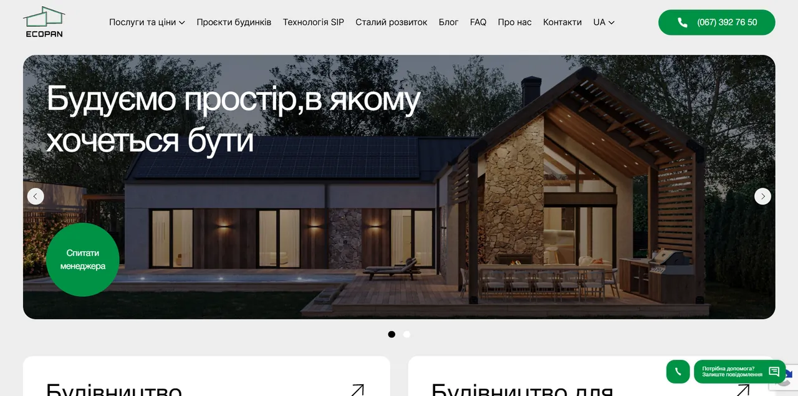

Створюю адаптивні, швидкі й підтримувані інтерфейси для медіа, культурних, туристичних і корпоративних сайтів. Останні п'ять років працюю у веб-студії Jam Development: перетворюю дизайн-макети на живі дво- й тримовні сайти на WordPress.
Проєкти, де я відповідав за фронтенд: верстка за макетом, адаптивність і кросбраузерність, інтерактивні елементи та інтеграція з WordPress.

Платформа віртуальних виставок і цифрових музейних ресурсів, де мистецтво й культурну спадщину можна досліджувати з будь-якої точки світу. Двомовний інтерфейс на WordPress та окремі підсайти для музеїв і митців.
Моя роль: верстка платформи й музейних підсайтів, інтеграція з WordPress, швидкість завантаження, сторінки аудіогідів і QR-турів.

Платформа, що показує наслідки російського вторгнення через VR-тури та 3D-моделі зруйнованих будівель. Має статичні розділи, блог і окремий VR-музей війни для перегляду у VR-окулярах.
Моя роль: адаптивна верстка, вбудовування VR- і 3D-контенту, робота з темою WordPress.

Портал Міністерства закордонних справ України з оцифрованими документами української дипломатії, створений спільно з ПРООН.
Моя роль: верстка, адаптивність, оптимізація швидкодії сторінок з великою кількістю документів.

Онлайн-портал Міністерства культури України для Музейного фонду України.
Моя роль: верстка сайту, адаптивна верстка, оптимізація завантаження.

Незалежне двомовне медіа про людей, культуру, роботу й повсякденне життя Києва для українських та іноземних читачів. Особливу увагу приділено структурі контенту, навігації та візуальній подачі матеріалів.
Моя роль: адаптивна верстка, шаблони статей і архівів, інтеграція з WordPress, щоб редакція публікувала матеріали самостійно.

Тримовний сайт компанії, що будує енергоефективні розумні будинки. Має каталог будинків з фільтрами й порівнянням, форму розрахунку орієнтовної ціни та заявки на консультацію.
Моя роль: верстка, адаптивність, інтерактивні елементи (фільтри каталогу, форма розрахунку ціни), інтеграція з WordPress.
Верстка, нові розділи, редизайни й підтримка в Jam Development.
Відкритий до пропозицій
Мар'ян Бовтач · Front-End розробник